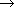
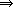
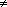
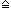
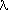

Here is the rationale for this Z specification.
This page shows excerpts from the full report.
Links to other pages, reports, and papers about this radiation therapy machine.
Created from this LaTeX source with the Z2HTML translator.
Links to more Z examples.
This page looks best when this  and this X are
about the same size:
and this X are
about the same size:  X. See these viewing tips.
X. See these viewing tips.
Jonathan Jacky, Michael Patrick and Jonathan Unger
January, 1997
Abstract
This report presents a formal (mathematical) specification for the operator's console of a computer-controlled radiation therapy machine equipped with a multileaf collimator. This formal specification, rather than the prose specification, serves as the primary reference source for programming and test planning.
Specified functions include selecting treatment setups from a database of stored prescriptions, setting up prescriptions on the treatment machine manually or semi-automatically, checking that the setup conforms to the prescription (with provision for overriding certain settings, with operator confirmation), safety interlocking and essential user interface features. The specification supports physics and experimental procedures as well as normal patient treatments.
The specification is expressed in the Z notation. It formalizes the requirements in a thorough informal (English prose) specification. Its organization suggests a detailed design.
Introduction
Overview
System configuration
Settings and registers
Values
Prescription database
Operators
Session
Session state
Operations on Session
Experiment mode
Store Field
Login
Select Patient
Select Field
Field
Field state
Relation to Session state
Initialization
Operations on Field
Select Patient
Select Field
Edit setting
Override
Store Field
Experiment Mode
Calibration factors
Dosimetry calibration
Software interlocks and status flags
User interface
Console state
Elements of user interaction
Available
Lists
Tables
Confirm
Menu
Dialog
Therapy console operations
Relation to Session state
Op operations
SelectDisplay operations
SelectList operations
SelectTable operations
ConfirmOp operations
MenuOp operations
DialogOp operations
Setup operations
Cancel operations
AcceptConfirm operations
Accept operations
Logout and login
Other operations
Combining the subsystems
This report presents portions of a formal specification for a real medical device, a radiation therapy machine. This specification, rather than the informal prose description, serves as the primary reference source for programming and test plannning. A paper [jacky95b] describes the development of part of the program based on the contents of this report.
This formal specification is based on a thorough informal (English prose) specification presented as Chapters 2 and 8 in [jacky92]. Here we attempt to formalize the requirements in that source. We have included many cross-references. Decimal numbers and integers (as in 8.4, 191) refer to chapter, section and page numbers in [jacky92], respectively.
The formal specification is expressed in the Z notation [spivey92]. We have corrected syntax and type errors detected by a checker [spivey92a].
Much of the apparent complexity in the prose requirements arises from the interaction of several subsystems which, by themselves, are simpler. In the formal specification we partition the system into subsystems and describe simple operations on each. For each operation on the system as a whole, we define a separate operation on each affected subsystem. The complex behaviors of the whole system emerge when we compose these simpler operations together.
Each subsystem is modelled by a Z state schema and a number of operation schemas on that state. This partition can itself be represented in Z.
 |
TherapyControl | ||
| Session | |||
| Field | |||
| Intlk | |||
| ... | |||
| Console | |||
Session (section [sect:session]) models those aspects of the treatment session that are related to the prescription database (section [sect:prescr] models the database itself). Field (section [sect:field]) models the many settings that characterize a single field. Intlk (section [sect:intlk]) models software interlocks and other flags that indicate readiness. Console (section [sect:ui]) models the user interface. Section [sect:compose] combines operations from Session, Field and Console.
Related operations in different subsystems are distinguished by suffix: ExptModeS, ExptModeF, and ExptModeC are operations in the Session, Field and Console subsystems, respectively.
Each user interface operation in the Console subsystem ensures that corresponding operations in the Session and Field subsystems are only invoked when their preconditions are satisfied. Therefore only the Console operations need to be total; usually there is no need to define total operations in the Session and Field subsystems. For example the ExptModeC operation in the Console subsystem checks the precondition that only physicists can invoke this operation; in Console we define what happens when an operator who is not a physicist attempts to enter experiment mode. Therefore ExptModeS and ExptModeF can assume that this precondition has been satisfied and need not cover the other cases.
Fixed aspects of the system configuration are represented by Z global constants: sets, functions and relations. This section introduces some of these constants. It should be possible to accommodate some configuration changes simply by changing their values.
The state of the therapy machine is largely determined by the values of named items. At this writing the list of items is
| ITEM ::= nfrac | dose_tot | dose | wedge | w_rot | filter | leaf0 | leaf39 | |
For brevity we omit formal declarations of the other collimator leaves, leaf1 .. leaf38.
There are many items but we can identify different subsets, where all of the members of each subset are treated the same way for some particular purpose.
Settings are items which are included in field prescriptions. Other items are kept in registers. In particular dose_reg items include calibration factors and other items concerned with the dosimetry system (In the C implementation setting and dose_reg are two different enumerations, separated so we can efficiently store and index zero-based C arrays. We may add other register enumerations in the future, for example for the LCC calibration factors.).
| setting, dose_reg: | ||
At this writing
| dose_reg = { pt_mode, pt_factor, press, temp, d_rate, t_fac, |
Scales are items that are continously variable over some range; examples are gantry angle and every collimator leaf position. Selections can only take on certain discrete values; examples are wedge and flattening filter selection. Counters accumulate during treatment runs; examples are dose and the number of fractions.
| scale, selection, counter: | ||
At this writing
| counter = { nfrac, dose_tot, dose } |
| selection = { wedge, w_rot, filter, pt_mode } |
A field is prescribed by determining the values of certain of its settings. Therapy fields are defined by the values of particular settings called prescriptions. Experiment fields are defined by the values of settings called presets (8.2, 171 third bullet; Table 8.2, 173). Readiness is determined by checking all the preset settings in experiment mode, and all the prescr settings (prescrip except the linear table motions) in therapy mode (8.9.8, 194). Most settings are machine motions, and the actual values of most settings are measured by sensors. The calibration constants are registers that are initially loaded with constants stored in the calibration database. At this writing
| leaves == { leaf0, leaf39 } |
| preset == leaves |
| motion == preset |
| prescrip == motion |
| prescr == prescrip \ { lat, longit, height } |
| sensor == setting \ { nfrac, dose_tot } |
| cal_const == { d_rate, t_fac, calvolt1, calvolt2 } |
The value of every item can be represented by a number.
| VALUE == |
Each item will be implemented by an appropriate (possibly floating point) numeric type. In this report it is sufficient to say they are all numbers, to indicate that we can do arithmetic with them.
Each item can assume a particular range of valid (physically achievable) values. For example, the gantry angle can vary from 0 to 359 (In the implementation gantry angle varies from 0.0 to 359.9. Decimal fractions are not built into Z.); the available wedge selections are no_wedge, 30, 45 and 60. We use valid to do range checking on numbers that the operator types in, and also on sensor readings, to check for faults (The C implementation includes one valid array indexed by setting and another (with a different name) indexed by dose_reg.). Every setting s has some valid values, and there is always a minimum and a maximum valid value. We define an uninitialized or blank value which is not valid for any setting. For each scale item, there is a tolerance within which variations in value are acceptable.
| blank: VALUE | ||
| tol: scale  VALUE | ||
| valid: ITEM 1 VALUE | ||
The prescription database stores patients and fields. We define a basic type for the names that identify them.
| [NAME] |
| PATIENT == NAME; FIELD == NAME |
An item's name usually corresponds to the text string that identifies it in screen displays and log files (We define one type for both kinds of names so the same specifications (and code) can be used to handle lists of patients and fields. In the implementation, elements of NAME are integer indices into arrays, usually of C structures that include the name string as one member.).
We distinguish a special value to indicate that no name has been selected.
| no_name: NAME | ||
| no_patient == no_name; no_field == no_name |
In experiment mode, we store fields under studies which are analogous to patients. In our model they have the same type.
| studies,patients: | ||
| no_patient | ||
For each patient or study, several prescribed fields are stored (This differs from [jacky90d], which describes a single collection of experiment fields. Moreoever, for each experiment field we now store the same prescrip settings as for therapy fields, although we only check the preset settings for agreement with the stored prescription). We must check against delivering too many fractions or monitor units from the same field (8.9.4, 187 -- 188), so the accumulated values of the counters are also stored (for patient fields only).
| ACCUMULATION == counter VALUE |
| PRESCRIPTION == prescrip VALUE |
| Preset: studies (FIELD | ||
| Prescribed: patients (FIELD | ||
| Accumulated: patients (FIELD | ||
The exceeded predicate tests whether the prescribed fractional dose, total dose or number of fractions have already been delivered.
| exceeded _ : ACCUMULATION | ||
In the following discussion consider field f of patient p; let prescribed = Prescribed p f and accumulated = Accumulated p f. The prescription includes the number of fractions prescribed n and the total dose prescribed dose_tot. We also keep track of the number of fractions accumulated to date accumulated n, the number of monitor units delivered since the beginning of the day accumulated dose and the total number of monitor units accumulated to date accumulated dose_tot (8.9.4, Fig. 83, 186).
Our OPERATOR type includes the operator's username and password. A special value indicates no operator has logged in. Physicists are operators who are authorized to use the equipment in its experiment mode (8.2, 170).
| [OPERATOR] |
| no_operator: OPERATOR | ||
| operators, physicists: | ||
| physicists | ||
In this section we model those aspects of the treatment session that are related to the prescription database. In section [sect:compose], we will combine the operations defined here with user interface operations described in section [sect:ui].
The Session state is determined by the treatment mode, the operator on duty, the currently selected patient and field, the accessible names (patients or studies), and the accessible prescribed fields and their counters. We first define SessionVars which declares all the state variables and provides predicates to ensure that the operator is authorized for the mode, and the names are consistent with the mode.
| MODE ::= therapy | experiment |
|
SessionVars | ||
| mode: MODE | |||
| operator: OPERATOR | |||
| patient: PATIENT | |||
| field: FIELD | |||
| names: | |||
| fields: FIELD | |||
| counters: FIELD | |||
| operator = no_operator | |||
| mode = experiment  operator | |||
| names = if mode = therapy then patients else studies | |||
Next, we define two cases. When no patient is selected, no prescribed fields are accessible; no field can be selected.
|
NoPatient | ||
| SessionVars | |||
| patient = no_patient | |||
| field = no_field | |||
| fields = | |||
| counters = | |||
When a patient is selected, that patient's fields are accessible. If a field is selected, it must be one of these.
|
PrescribedPatient | ||
| SessionVars | |||
| patient  no_patient | |||
| patient | |||
| field = no_field | |||
| fields = if mode = therapy then Prescribed patient else Preset patient | |||
| mode = therapy counters = Accumulated patient | |||
Together these define the Session state.
| Session  PrescribedPatient |
The Session subsystem starts up in therapy mode with no operator and no patient.
|
InitSession | ||
| NoPatient | |||
| mode = therapy | |||
| operator = no_operator | |||
None of the Session state variables are sensor inputs; all are under program control.
In the following subsections we model the operations on Session. We will put together the operations defined in different states in section [sect:compose], below.
Physicists can toggle the session from therapy mode to experiment mode and back (This is a change from the original requirements in [jacky90d], where Experiment Mode switches to experiment mode but Select Patient switches back to therapy mode.). The user interface ensures that only physicists can invoke this operation, so there is no need here to define a total operation that describes what happens when an operator who is not a physicist attempts this operation. After switching modes, no patient (study) and no field are selected (8.9.6, 190 -- 191).
|
ExptModeS | ||
| operator | |||
| NoPatient' | |||
| (mode',names') = if mode = therapy then (experiment,studies) | |||
| operator' = operator | |||
Store Field (8.9.5, 189 -- 188) accepts a new field name, which becomes the selected field and is also added to the list of fields (The prose [jacky92] also requires that the new field be added to the prescription database for the current patient. We do not model this formally (in fact we model the prescription database as a constant). The precondition patient no_patient is not explicit in the prose.).
|
StoreFieldS | ||
| field?: FIELD | |||
| prescribed': PRESCRIPTION | |||
| accumulated': ACCUMULATION | |||
| patient no_patient | |||
| field' = field? | |||
| fields' = fields | |||
| mode = therapy counters' = counters | |||
| mode' = mode | |||
| operator' = operator | |||
| patient' = patient | |||
| names' = names | |||
Here prescribed' and accumulated' are just place holders; their values are defined in the corresponding Field operation StoreFieldF.
Login (2.5.2, 17 -- 20; 8.9.1, 183) accepts a new operator?. The user interface ensures that the new operator is authorized.
|
NewOperator | ||
| operator?: OPERATOR | |||
| operator' = operator? | |||
| operator' | |||
There are two variations. Usually the new operator is sufficiently privileged to keep the same mode. Otherwise the session reverts to therapy mode with no patient and no field (8.9.6, 190).
|
Privileged | ||
| NewOperator | |||
| mode = therapy | |||
| mode' = mode | |||
| patient' = patient | |||
| names' = names | |||
| field' = field | |||
| fields' = fields | |||
| counters' = counters | |||
|
Unprivileged | ||
| NewOperator | |||
| mode = experiment | |||
| operator | |||
| mode' = therapy | |||
| NoPatient' | |||
| LoginS Privileged |
In Select Patient (8.9.3, 184 -- 185) the patient's prescribed fields are loaded, but no field is selected (The prose [jacky90d] says that if the patient list is selected in experiment mode, the session reverts to therapy mode (8.9.3, 184 last paragraph). We have dropped this requirement.). The user interface ensures that the new patient is in the prescription database.
|
SelectPatientS | ||
| patient?: PATIENT | |||
| patient? | |||
| patient' = patient? | |||
| field' = no_field | |||
| fields' = if mode = therapy then Prescribed patient' else Preset patient' | |||
| mode = therapy counters' = Accumulated patient' | |||
| mode' = mode | |||
| operator' = operator | |||
| names' = names | |||
Select Field (8.9.4, 186 -- 189) changes the current field. The user interface ensures this operation cannot occur if there is no patient, and ensures that the new field is prescribed.
|
SelectFieldS | ||
| field?: FIELD | |||
| patient no_patient | |||
| field? | |||
| field' = field? | |||
| operator' = operator | |||
| mode' = mode | |||
| patient' = patient | |||
| fields' = fields | |||
| counters' = counters | |||
In this section, we look inside the machine state and deal with particular machine settings. We model operations that involve the many settings that characterize a single field.
The Field schema includes the state variables that represent settings for the currently selected field and mode. Sensors report measured setting values. Prescribed setting values are read from the prescription database.
Computed and calibrated item values are entered by the operator or calculated from prescribed settings and calibration constants; these are stored in registers. Certain calibration constants are stored in files (8.9.13, 213 first full paragraph; 215 last paragraph). Counters hold setting values that are accumulated over successive runs. For example, the dose prescribed for a single fraction may be have to be delivered in two or more treatment runs.
Some settings that do not match their prescribed values can be overridden by the operator (8.4, 175 second paragraph; 8.8.1, 181). It is necessary to store the value of each setting when it is overridden (see the requirement in the last paragraph under ``override'' on p. 181). Only settings that are prescribed can be overridden.
| cal_factor: cal_const VALUE | ||
|
Field | ||
| prescribed: PRESCRIPTION | |||
| accumulated: ACCUMULATION | |||
| measured: sensor VALUE | |||
| overridden: prescr | |||
| computed, calibrated: dose_reg VALUE | |||
The measured settings are read from sensors so here we cannot write any predicates that constrain them.
A few operations on Field read the mode and field state variables declared in Session. In therapy mode, the prescribed settings in the Field state are those from the prescription database entry for the currently selected mode and field in the Session state. (In experiment mode the prescribed settings are also loaded from the prescription database but may be changed subsequently. In therapy mode the counters are loaded from the prescription database when the field is selected but may be changed subsequently. See section [sect:sel-field-f]).
|
PrescribedField | ||
| Field | |||
| Session | |||
| field no_field | |||
| mode = therapy prescribed = fields field | |||
When no field has been selected, prescribed settings and counters have no values and the computed settings dose and time indicate no dose. (8.9.7, 192, second paragraph after the bullets). No settings are overridden (8.9.8, 194; 8.9.9, 196; 8.9.10, 198).
| no_prescrip == ( p: prescrip |
| no_counter == ( c: counter |
| no_dose_reg == ( d: dose_reg |
| no_dose == { p_dose |
|
NoFieldF | ||
| Field | |||
| prescribed = no_prescrip | |||
| accumulated = no_counter | |||
| no_dose | |||
| overridden = | |||
| NoFieldS [ Session | field = no_field ] |
| NoField NoFieldF |
FieldSession expresses the combined invariant:
| FieldSession PrescribedField |
Field begins with no field. The calibration factors are initialized with the constants on file (8.9.13, 213, second paragraph after bullets) and the other registers hold no values.
|
InitField | ||
| NoFieldF | |||
| computed = calibrated = no_dose_reg | |||
In the following subsections we model the operations on Field. We will put together the operations defined in different states in section [sect:compose], below.
SelectPatient also affects Field: when a patient is first selected, there is no field.
|
SelectPatientF | ||
| NoFieldF' | |||
| computed' = computed | |||
| calibrated' = calibrated | |||
When a new field is selected, its prescribed settings are loaded and no settings are overridden. This operation requires read-only access to the fields state variable in the Session schema.
|
NewFieldF | ||
| prescribed' = fields field' | |||
| overridden' = | |||
There are two variants of SelectField. Experiment mode is much simpler because there is no prescribed dose. The prescribed settings are loaded. The dose and time do not change (8.9.11, 202, second paragraph from bottom).
|
SelectExptFieldF | ||
| NewFieldF | |||
| mode = experiment | |||
| computed' = computed | |||
| calibrated' = calibrated | |||
Selecting rectangular fields in experimental mode (8.9.4, 188 -- 189) is not modelled formally.
In therapy mode, the dose for the treatment run and the treatment backup time are calculated. Treatment backup time is calculated from the dose and two calibration factors, the machine's nominal dose rate computed d_rate and the treatment time factor computed t_fac (8.9.11, 200, last paragraph; 202, second paragraph; 8.9.13, 213, first two paragraphs after bullets) (The backup time is given by t_backup = factor * dose / rate. For example with prescribed dose 100.0 MU, dose rate 50.0 MU/min and factor 1.50 the backup time is 3.00 minutes. We do not attempt to model this floating-point calculation in Z.).
| DOSE == VALUE; RATE == VALUE; FACTOR == VALUE; TIME == VALUE |
| t_backup: (DOSE | ||
We keep track of the number of monitor units delivered since the beginning of the day accumulated dose. When the prescribed field settings are loaded, the computed dose is adjusted to deliver the remaining daily dose. This makes it easy to set up another treatment run for the same field if the earlier attempts had to be interrupted for any reason, or were used to make a port film. The treatment backup time is calculated from this adjusted dose, not the prescribed dose.
The adjusted dose and corresponding backup time are stored in computed p_dose and calibrated p_time (computed p_dose may differ from prescribed dose). There is also a register computed p_time where the user may optionally enter a backup time different than calibrated p_time (section [sect:editf], below) (8.9.11, Fig. 8.8, 199; Fig. 8.9, 203; Fig 8.10, 207; Fig. 8.11, 208).
|
DoseTime | ||
| (let t == t_backup(computed' p_dose,computed' d_rate,computed' t_fac) | |||
| computed' p_time = calibrated' p_time | |||
| { p_dose, p_time } | |||
|
NewTherapyField | ||
| NewFieldF | |||
| DoseTime | |||
| mode = therapy | |||
| accumulated' = counters field' | |||
There are two cases. The normal case occurs when the user interface confirms that the prescribed fractional dose, total dose and number of fractions are not yet exceeded. The dose is read from the prescription, and no settings are overridden (8.9.4, 187).
|
SelectTherapyFieldF | ||
| NewTherapyField | |||
| computed' p_dose = prescribed dose - accumulated dose | |||
| overridden' = | |||
Together these make the simple case
| SelectSimpleFieldF SelectExptFieldF |
The other case occurs when the user interface acquires the preset dose from the operator (often when one or more of the counter settings is exceeded. If this differs from the prescribed dose then dose is overridden, and any exceeded settings are also overridden (8.9.4, 188).
|
SelectComplexFieldF | ||
| NewTherapyField | |||
| dose?: VALUE | |||
| computed' p_dose = dose? | |||
| (let ovr == | |||
| ( c: counter | accumulated' c | |||
Here we have made a few small changes from the prose requirements.
According to the prose (8.9.4, 187 -- 188), the Select Field
operation includes a dialog with the operator to enter a new dose or
treatment time in some cases. In our formal specification it is
necessary for the operator to explicitly select the Edit
operation after Select Field in order to enter a new dose or
treatment time. These minor adjustments achieve the intent of the
prose and simplify the program. As required by the prose, our
SelectComplexFieldF overrides exceeded settings (after operator
confirmation, enforced by the user interface) (We also
considered the slightly simpler alternative of omitting the operator
confirmation and leaving overridden =  in the exceeded
case. In that alternative, the Intlk subsystem
(section [sect:intlk]) would make the offending settings
not_ready to prevent the field being delivered unless the operator
explicitly edits or overrides those settings.).
in the exceeded
case. In that alternative, the Intlk subsystem
(section [sect:intlk]) would make the offending settings
not_ready to prevent the field being delivered unless the operator
explicitly edits or overrides those settings.).
The edit operation updates a prescribed or computed item value.
|
EditF | ||
| item?: ITEM | |||
| value?: VALUE | |||
| accumulated' = accumulated | |||
| calibrated' = calibrated | |||
The prose actually describes four Edit operations. Some features are common to all. The first variation is for preset settings; the user interface ensures this can be invoked in experiment mode only (8.8.1, 180). The prescribed value is changed, and that setting is no longer overridden.
|
EditPresetF | ||
| EditF | |||
| item? | |||
| prescribed' = prescribed | |||
| overridden' = { item? } | |||
| computed' = computed | |||
The second variation is for calibration factors; again, the user interface only provides this in experiment mode (8.9.3, 215). Calibration factors that users can edit are modelled as computed settings in registers. Calibration factors are never considered overridden.
|
EditCalF | ||
| EditF | |||
| item? | |||
| computed' = computed | |||
| prescribed' = prescribed | |||
| overridden' = overridden | |||
The third variation is for dose (8.9.11, 201--202). The computed (not prescribed) value is changed, and the dose is considered overridden (8.9.4, 188; 8.9.11, 202). The treatment times are recalculated.
|
EditDoseF | ||
| EditF | |||
| DoseTime | |||
| item? = p_dose | |||
| computed' p_dose = value? | |||
| overridden' = overridden | |||
| prescribed' = prescribed | |||
The fourth and last variation is treatment backup time, which can be edited in both modes (8.9.11, 202). Here again the computed value is changed; time is not a prescribed setting, so it cannot be overridden.
|
EditTimeF | ||
| EditF | |||
| item? = p_time | |||
| computed' = computed | |||
| prescribed' = prescribed | |||
| overridden' = overridden | |||
Here is the combined operation:
| EditSettingF |
| EditCalF |
EditSettingF is not a total operation (it does not handle all possible values of ITEM) but the user interface ensures that its preconditions are always satisfied.
We now provide the EditDoseF and EditTimeF operations instead of the dialog after Select Field proposed in [jacky92] (8.9.4, 187 -- 188).
Certain items can be overridden.
|
OverF | ||
| item?: ITEM | |||
| prescribed' = prescribed | |||
| accumulated' = accumulated | |||
| computed' = computed | |||
| calibrated' = calibrated | |||
We add a newly overridden setting and its currently measured value to the overridden function (8.4, 175 second paragraph; 8.8.1, 181). If the setting is already overridden, the override is cancelled.
|
OverrideSetting | ||
| OverF | |||
| item? | |||
| overridden' = | |||
Dose and time are special cases; overriding either makes dose overridden with its accumulated (not measured) value as the overridden value. The counters total dose dose_tot and number of fractions nfrac can only be overridden (after operator confirmation) as part of the SelectFieldF operation.
|
OverrideDose | ||
| OverF | |||
| item? | |||
| overridden' = | |||
| OverrideF OverrideSetting |
This operation (8.9.5, 189 -- 190) makes the prescribed settings equal to the actual machine settings, except there is no prescribed dose and the number of fractions is set to one. The accumulators are reset to zero.
| zero_counter == ( c: counter |
|
StoreFieldF | ||
| computed' = computed | |||
| prescribed' = prescribed | |||
| accumulated' = zero_counter | |||
| overridden' = | |||
| calibrated' = calibrated | |||
This operation toggles modes with no field. There are no dose and time (8.9.11, 202, second paragraph from bottom).
|
ExptModeF | ||
| NoFieldF' | |||
| computed' = computed | |||
| calibrated' = calibrated | |||
Dosimetry calibration factors, including the dose rate and treatment time factor used to calculate the backup time, appear on the Dosimetry Calibration display (8.9.13, 213 -- 214) (Called Cal Factors in [jacky92], since renamed to distinguish it from the forthcoming LCC Calibration etc.). The calibrated values in the left column are read from files or measured by sensors, while the computed values in the right column are computed by the control program or entered by the operator using the EditCalF operation.
The pressure-temperature correction factors are used to adjust the standard calibration voltages for the dosimetry system (8.9.13, 213 -- 215). The calibrated calvolt1 and calibrated calvolt2 represent the standard calibration voltages on file (8.9.13, 213, second paragraph from bottom), while computed calvolt1 (etc.) represent the calibration voltages actually in effect, which are obtained by adusting the standard calibration voltage by a barometric pressure/temperature correction factor (8.9.13, 213 bottom paragraph, 214 top paragraph) (The pressure-temperature factor is given by pt_factor = (press/1013) \times (295/(temp+273)), where press and temp are in mbar and deg. C, respectively. We do not attempt to model this floating-point calculation in Z.).
| PRESSURE == VALUE; TEMPERATURE == VALUE |
| pt_formula: (PRESSURE | ||
The computed press and computed temp are the pressure and temperature entered by the operator, and while calibrated temp and calibrated press are measured continously by sensors. The computed pt_factor stores the barometric pressure/temperature correction factor of the day calculated from the readings entered by the operator (8.9.13, 214, third paragraph), while calibrated pt_factor stores the automatic pressure/temperature correction factor calculated from sensor readings (8.9.13, 214, fourth paragraph). The pressure-temperature interlock (section [sect:intlk]) accounts for the possibility that the pressure or temperature values might be invalid or expired.
The operator sets computed pt_mode = automatic to use the automatic pressure/temperature correction factor, and computed pt_mode = manual to use the correction factor that is based on the manually entered values (8.9.13, 214, fifth paragraph).
| automatic, manual: VALUE | ||
The ScanPT operation computes the correction factors and updates the registers with the new values.
|
ScanPT | ||
| calibrated' pt_factor = pt_formula(calibrated press,calibrated temp) | |||
| computed' pt_factor = pt_formula(computed press,computed temp) | |||
| (let pt_corr == if computed pt_mode = automatic | |||
| { pt_factor } | |||
| { pt_factor, calvolt1, calvolt2 } | |||
| prescribed' = prescribed | |||
| accumulated' = accumulated | |||
| overridden' = overridden | |||
ScanPT is scheduled by the control program itself; it is not invoked by the user.
(See the full report.)
The user may provide input at the workstation at any time (by typing, pressing function keys or cursor arrow keys --- in our implementation we do not use the mouse). We model each keystroke and the actions it invokes as an Event that accepts an input? that may change the Console state.
|
Event | ||
| input?: INPUT | |||
We do not attempt to formalize any ``look and feel'' aspects of the user interface, such as the appearance of the display. They are already described in sufficient detail in [jacky92], chapters 2 and 8.
INPUT is the set of inputs (keypresses) the user can provide (In the implementation, inputs are X window system events and the values of INPUT correspond to X keysyms [nye88].). Here is the list of inputs at this writing.
| INPUT ::= filter_wedge | leaf_collim | dose_intlk | gantry_psa | dose_cal | |
Many operations are invoked by pressing keys, so it is often convenient to identify operations with the corresponding input. Therefore we assign them to the same type. Here is the list of operations at this writing.
| OP: | ||
| OP = { filter_wedge, leaf_collim, dose_intlk, gantry_psa, dose_cal, | ||
The user interface shows many displays, for example the login display (Fig 8.1, 178), the patient list display (Fig. 8.2, 185), the leaf collimator display (Fig. 8.7, 197) etc. The operator can choose any display by pressing a key, so we can identify displays with these operations.
| DISPLAY: | ||
| DISPLAY = { filter_wedge, leaf_collim, dose_intlk, gantry_psa, dose_cal, | ||
This section describes the variables in the Console state.
The first variable indicates the mode of interaction. If no interaction is in progress the console is available, or there may be a dialog in progress where the user is typing text into a dialog box, or there may be a menu displayed, or the user may be asked to confirm some operation by providing a yes/no answer (this mode can also be used to present informational messages).
| INTERACTION ::= available | dialog | menu | confirm |
The op variable keeps track of which top-level operation (described in [jacky92]) is underway.
The display variable indicates which of the screen designs pictured in the informal specification is currently visible on the display. The display variable determines which items appear and helps determine which operations are available.
The item state variable holds the item which the operator has selected from a tabular display, for example the setting which the operator is editing.
The nlist state variable holds the list of names (of patients or fields) that appear on a list display, and list_item indicates the currently selected name.
The menu_item state variable holds the index of the current menu selection (a small integer).
| nmax: | ||
| SELECTION == { i: |
The buffer state variable models the (possibly incomplete) string that the user edits in dialog mode.
| [STRING] |
| empty: STRING | ||
The keyswitch must be unlocked to allow the console to be used (8.7, 179).
| KEYSWITCH ::= locked | unlocked |
Some operations are available only when a treatment is being set up, and are locked out while a treatment run is in progress (8.8.2, 183).
| RUN ::= setup | running |
The keyswitch and run variables depend on sensor inputs; they are not constrained here.
Together, these variables describe the state of the user interaction.
|
Console | ||
| keyswitch: KEYSWITCH | |||
| run: RUN | |||
| display: DISPLAY | |||
| op: OP | |||
| interaction: INTERACTION | |||
| item: ITEM | |||
| nlist: | |||
| list_item: NAME | |||
| menu_item: SELECTION | |||
| buffer: STRING | |||
When the control program starts up, the login process begins (section [sect:login-console]) (When the implementation starts up, the startup screen appears first. The login process does not begin until the various Init... conditions are established. We do not model this formally.).
|
InitConsole | ||
| Console | |||
| op = login | |||
| display = login | |||
| interaction = dialog | |||
| buffer = empty | |||
All user interactions are built up from a few elements. In this section we define the constants, states and operations that serve as building blocks.
The caption type models messages or other output to the operator that appear temporarily at the console (in dialog boxes or perhaps even from the speaker, see 2.2.3, 9). Captions are distinguished from log messages which appear in a different location on the console and are also stored in log files along with timestamps other information (2.2.4, 9).
| [CAPTION, MESSAGE] |
Ignore is the default do-nothing operation that is invoked when a key is pressed but the preconditions for the associated operation are not satisfied. Ignore does not change the state, but issues an alert (such as sounding the workstation bell) to notify the user that the input was received but the operation is not enabled.
| alert: CAPTION | |
|
Ignore | ||
| Event | |||
| caption!: CAPTION | |||
| caption! = alert | |||
The keyswitch must be unlocked for any operation to occur. When the keyswitch is locked, input is ignored:
| Unlocked [ Console | keyswitch = unlocked ] |
| EventUnlocked Event |
Many operations are invoked by pressing the select key.
| Select [ EventUnlocked | input? = select ] |
It is convenient to describe the operations that can occur in each of the interaction modes. Each mode is described in a following subsection.
Most of the top-level operations described in [jacky92] can only be selected when the console is available.
| Available [ Console | interaction = available ] |
|
Op | ||
| EventUnlocked | |||
| Available | |||
| input? | |||
Certain operations have stronger preconditions: they cannot occur when a run is in progress (8.8.2, 183). A few operations occur only when a run is in progress (8.9.11, 209-210).
| Setup [ Available | run = setup ] |
| Running [ Available | run = running ] |
When the console is available, the user may select a new display. The console remains available.
|
SelectDisplay | ||
| Op | |||
| input? | |||
| display' = input? | |||
| op' = display' | |||
| Available' | |||
SelectDisplay operations may change item and list_item (see below) but do not change other state variables (for brevity we omit the x' = x ``nothing changes'' predicates).
When an interaction is in progress, the console is Engaged. The Done operation schema describes what happens when an interaction completes: the console returns to the Available state, and op returns to its value when the display was selected.
| Engaged [ Console | interaction available ] |
|
Done | ||
| EventUnlocked | |||
| Engaged | |||
| op' = display | |||
| display' = display | |||
| Available' | |||
The Cancel operation is used to end an interaction without making permanent changes to the underlying machine state.
| Cancel [ Done | input? = cancel ] |
Certain displays show a list of names (patients or fields). When a list display is selected, nlist is loaded, and the default list_item is assigned. If the list is not empty, the List state results (the patient list might be empty if there are no patients on file; the field list is always empty when there is no patient, and may be empty if there are no fields on file for the selected patient).
| list: | ||
| default_name: | ||
| List [ Available | display |
|
SelectList | ||
| SelectDisplay | |||
| input? | |||
| ((nlist = | |||
Here display  list
list  nlist
nlist  distinguishes the
List state, and this test occurs explicitly in the implementation.
In contrast, list_item
distinguishes the
List state, and this test occurs explicitly in the implementation.
In contrast, list_item  nlist is an invariant. It need not be
coded as an explicit test but it must be maintained or else the
implementation might abort (because list_item is used as an index
into nlist).
nlist is an invariant. It need not be
coded as an explicit test but it must be maintained or else the
implementation might abort (because list_item is used as an index
into nlist).
The console indicates list_item (for example by placing a highlight or cursor over that name in the list). Subsequently the user can choose a new name from the list by using the up and down-arrow keys. The function aname calculates the new name by ``dead reckoning'' from the old name, the list, and the arrow key (it is not necessary for the program to poll the console for the cursor position). The list remains visible.
| v_arrow == { up_arrow, down_arrow } |
| aname: (v_arrow | ||
| Continue [ |
|
GetListArrow | ||
| EventUnlocked | |||
| input? | |||
| list_item' = aname(input?,list_item,nlist) | |||
| Continue | |||
This is a Continue operation that does not change interaction, op, or display. Here list_item is the only state variable that changes. We do not completely specify default_name and aname; we leave that to the implementation. Here we merely provide the predicates needed to ensure that the implementation does not abort.
The user presses the select key to choose the current list_item for some purpose. The selection is logged; nmessage converts the name to a log message.
| selected_msg: NAME MESSAGE | ||
|
SelectName | ||
| Select | |||
| name!: NAME | |||
| message!: MESSAGE | |||
| List | |||
| name! = list_item | |||
| message! = selected_msg name! | |||
GetListArrow and SelectName are not total operations; they do not
handle the case where nlist =  . The latter case is handled
by a default do-nothing operation, IgnoreOthers, which includes
Ignore. We do not define the precondition of this operation
explicitly; we code the implementation so control reaches
IgnoreOthers when no other operations are enabled.
. The latter case is handled
by a default do-nothing operation, IgnoreOthers, which includes
Ignore. We do not define the precondition of this operation
explicitly; we code the implementation so control reaches
IgnoreOthers when no other operations are enabled.
Certain displays show a table of items (settings for one subsystem, calibration factors etc.). The constant table_items tells which items on each table can be selected for editing or overriding (additional items may be displayed as well). When a tabular display is selected, the default item is assigned, and the Table state results.
| table: | ||
| default_item: table ITEM | ||
| table_items: table | ||
| Table [ Available | display |
|
SelectTable | ||
| SelectDisplay | |||
| input? | |||
| item' = default_item display' | |||
| Table' | |||
Subsequently the user can indicate a new item on the table by using all four arrow keys.
| arrow == { right_arrow, left_arrow } |
| asetting: (arrow | ||
|
GetSettingArrow | ||
| EventUnlocked | |||
| input? | |||
| item' = asetting(input?,item,display) | |||
| Continue | |||
Here item is the only state variable that changes.
Items can be selected from tabular displays for editing or overriding. Editing or overriding is only enabled in the Setup state (when a treatment run is not in progress, see 8.8.2, 183). Pressing the select key when certain tabular displays are present invokes an editing operation: edit_setting if the selected item is a setting and edit_dose_reg if it is a dose_reg (notice that here op' is not the same as input?). Therefore it is necessary to separate setting and dose_reg items on different tables (Because the implementation cannot distinguish setting from dose_reg based on item alone; item values are just C enum values (integers).).
| setting_table, dose_reg_table: | ||
|
SelectItem | ||
| Select | |||
| Setup | |||
| Table | |||
| item' = item | |||
| (op' = edit_dose_reg | |||
| op' = edit_setting | |||
The postcondition here implies Editing, the invariant of the editing state (The implementation uses op to determine whether item is an index into setting or dose_reg.).
|
Editing | ||
| Console | |||
| interaction | |||
| (op = edit_dose_reg | |||
| op = edit_setting | |||
The Setup precondition of SelectItem prevents the console entering the Editing state when a run is in progress. Other mechanisms prevent the machine from beginning a run while in the Editing state.
Confirm interactions present a query (``Are you sure ... ?'') and wait for the user to provide a yes/no answer, indicated by the select or cancel keys (for example see 8.9.11, 210). Each Confirm operation presents a confirmation box (a sort of dialog box) with a caption that identifies the operation, and the query. The display under the confirmation box does not change.
| Confirm [ Console | interaction = confirm ] |
| ocaption: OP CAPTION | ||
|
ConfirmOp | ||
| Op | |||
| caption!, query!: CAPTION | |||
| caption! = ocaption op' | |||
| display' = display | |||
| Confirm' | |||
| AcceptConfirm Confirm |
When the console is Available the user can invoke a menu, then make a selection from the menu. Each menu includes a caption and a list of menu entries. The display does not change.
| default_selection: SELECTION | ||
| Menu [ Editing | interaction = menu ] |
|
MenuOp | ||
| Op | |||
| caption!: CAPTION | |||
| menu!: iseq CAPTION | |||
| menu_item' = default_selection | |||
| display' = display | |||
| Menu' | |||
Here op also changes; the other state variables retain the same values.
Menus are used to choose new values for selection items; valid selection values are small integers. Combining MenuOp with SelectItem yields the MenuEdit operation. The menu shows the item name and a sequence of descriptive strings indexed by the corresponding item values. Here again, the Editing postcondition of SelectItem guarantees that op can be used to help look up selection_values item.
| setting_info_name: ITEM CAPTION | ||
| setting_value: selection iseq CAPTION | ||
|
MenuEdit | ||
| MenuOp | |||
| SelectItem | |||
| item | |||
| caption! = setting_info_name item; | |||
| menu! = setting_value item | |||
There are functions to return the default menu selection and the new selection after each up or down-arrow keypress.
| amenu: (v_arrow | ||
|
GetMenuArrow | ||
| EventUnlocked | |||
| input? | |||
| menu_item' = amenu(input?,menu_item,item) | |||
| Continue | |||
Here item is the only variable that changes.
The user presses select to accept the current menu item and the console becomes available again.
| AcceptMenu Menu |
|
MenuSettingC | ||
| AcceptMenu | |||
| item!: ITEM | |||
| value!: VALUE | |||
| Editing | |||
| item! = item | |||
| value! = menu_item | |||
When the console is Available the user can begin a dialog, then type and edit text in a dialog box. The dialog box contains a caption and a prompt that may include the values of other state variables. The display under the dialog box does not change.
| Dialog [ Console | interaction = dialog ] |
|
DialogOp | ||
| Op | |||
| caption!, prompt!: CAPTION | |||
| caption! = ocaption op' | |||
| display' = display | |||
| Dialog' | |||
Here only interaction, buffer, and op change. The buffer may be emptied, or may be filled with a convenient default value. We'll describe changes to op later, with each dialog operation.
The console remains in Dialog while the user types and edits. The GetChar operation gets a single character and updates the buffer as described by the modify function (append printing characters to the end of buffer, and do the appropriate things with editing characters).
| CHAR: | ||
| modify: (STRING | ||
|
GetChar | ||
| EventUnlocked | |||
| input? | |||
| buffer' = modify(buffer,input?) | |||
| Continue | |||
Here buffer is the only variable that changes.
When a dialog is done, the dialog box disappears and the console becomes available again. At any time the user can cancel the dialog and discard the input. To submit the input, the user presses a terminator key; the program can Accept the input or Reprompt (the user may also Cancel the dialog).
| terminator: | ||
|
Accept | ||
| Done | |||
| Dialog | |||
| input? | |||
|
Reprompt | ||
| EventUnlocked | |||
| input? | |||
| buffer' = empty | |||
| Continue | |||
Here again, buffer is the only variable that changes.
Dialogs are frequently used to edit item values. Combining DialogOp with SelectItem yields the DialogEdit operation. Dialog box editing begins if the selected item is not a selection (does not have just a few discrete values). The program captions the dialog box with the item name and the minimum and maximum valid item values (The dialog box caption also includes the units, but we do not model this formally.).
| MIN == VALUE; MAX == VALUE |
| setting_info: ITEM | ||
|
DialogEdit | ||
| DialogOp | |||
| SelectItem | |||
| item | |||
| prompt! = (let v == valid item | |||
The implementation uses the value of op guaranteed by the Editing postcondition of SelectItem to look up valid item; there are separate valid arrays for dose_reg and setting.
When the user presses a terminator key, the program attempts to convert the buffer contents to a (numeric) value (non-numeric strings are always converted to an out-of-range value). If the conversion succeeds and the value is valid for the item, the dialog ends and the item and its value are reported; otherwise, the program reprompts.
| sval: STRING VALUE | ||
|
EditSettingC | ||
| Accept | |||
| item!: ITEM | |||
| value!: VALUE | |||
| Editing | |||
| item! = item | |||
| (let v == sval buffer | |||
| InvalidSetting [ Reprompt | Editing |
In the implementation it is convenient to combine these two operations (In EditOrInvalidSetting, the two outputs item! and value! are not used in the Invalid case.).
| EditOrInvalidSetting EditSettingC |
In this subsection we present the operations described in [jacky92]. Several building block operations require no further elaboration: SelectDisplay, SelectTable, GetListArrow, GetSettingArrow, Cancel, GetMenuArrow, MenuSettingC, GetChar, and EditOrInvalidSetting and are already complete. Others require further specialization in the following subsections.
A few Console operations read (but do not change) variables from the Session state (section [sect:session]). When the Console shows the patient or field list, its nlist state variable holds the patients or fields from the Session state. This is expressed by the ConsoleSession invariant:
|
ConsoleSession | ||
| Console | |||
| Session | |||
| display = select_patient nlist = names | |||
| display = select_field nlist = dom fields | |||
Several operations are based only on Op. They are Continue operations because they do not involve any ongoing interaction, just a single keypress.
| SimpleOp Op |
Experiment Mode (8.9.6, 190):
|
ExptModeC | ||
| SimpleOp | |||
| Setup | |||
| input? = expt_mode | |||
| operator | |||
Auto Setup (8.8.1, 181):
| auto_setup_display == { field_summary, filter_wedge, leaf_collim, dose_intlk } |
|
AutoSetupC | ||
| SimpleOp | |||
| subsystem!: auto_setup_display | |||
| Setup | |||
| field no_field | |||
| display | |||
| input? = auto_setup | |||
| subsystem! = display | |||
There are a few simple displays that provide no selections or interactive editing, Field Summary (8.9.7, 191) and the help display (not discussed in [jacky92]
| simple_display == { field_summary, help } |
The specializations of SelectList are Select Patient (8.9.3, 184) and Select Field (8.9.4, 186). The latter operation only makes sense when a patient has been selected:
| list = { select_patient, select_field } |
|
SelectPatientList | ||
| SelectList | |||
| input? = select_patient | |||
| nlist' = names | |||
|
SelectFieldList | ||
| SelectList | |||
| patient no_patient | |||
| input? = select_field | |||
| nlist' = dom fields | |||
The table displays are Gantry/PSA (8.9.8, 193), Filter/Wedge (8.9.9, 194), Leaf Collimator (8.9.10, 196), Dosimetry/Therapy Interlocks (8.9.11, 199) and Calibration Factors (8.9.13, 213):
| table = { gantry_psa,filter_wedge,leaf_collim,dose_intlk,dose_cal } |
The constant table_items tells which items on each table can be selected for editing or overriding (additional items may be displayed as well).
| table_items = { gantry_psa |
It is necessary to separate setting and dose_reg items on different tables:
| setting_table = { gantry_psa,filter_wedge,leaf_collim } |
| dose_reg_table = { dose_intlk, dose_cal } |
Now that these constants are defined, the previously defined SelectTable operation requires no further specialization.
To begin Cancel Run (8.9.11, 209 -- 210):
| cancel_run_query: CAPTION | ||
|
SelectCancelRun | ||
| ConfirmOp | |||
| Running | |||
| input? = cancel_run | |||
| op' = input? | |||
| query! = cancel_run_query | |||
The complementary AcceptConfirm operation is CancelRunC (below).
At this writing there are no simple MenuOp operations, only MenuEdit operations (under Setup, below).
| type_message_prompt, store_field_prompt: CAPTION | ||
To begin Write Log Message (2.5.1, 17):
|
TypeMessage | ||
| DialogOp | |||
| input? = log_message | |||
| op' = input? | |||
| prompt! = type_message_prompt | |||
To begin Store Field (8.9.5, 189 -- 188):
|
EditField | ||
| DialogOp | |||
| Setup | |||
| input? = store_field | |||
| op' = input? | |||
| prompt! = store_field_prompt | |||
These two operations are completed by the complementary Accept operations, WriteMessageC and StoreFieldC (below).
Under Setup, there are SelectName, SelectItem, MenuEdit and DialogEdit operations.
Select Patient (8.9.3, 184 -- 185):
|
SelectPatientC | ||
| SelectName | |||
| Setup | |||
| display = select_patient | |||
| Continue | |||
At this writing, SelectPatient is a Continue operation; the patient list remains on the screen (We also considered establishing display' = select_field in SelectPatientC. It would not be difficult to adopt this alternative later.).
SelectField (8.9.4, 186 -- 189): There are three cases. The simplest case occurs during experiment mode, or when the chosen field has not yet been delivered today and the prescribed total dose and number of fractions has not yet been exceeded (8.9.4, 187).
|
NewFieldC | ||
| SelectName | |||
| ConsoleSession | |||
| Setup | |||
| display = select_field | |||
|
SelectSimpleFieldC | ||
| NewFieldC | |||
| mode = experiment | |||
| Continue | |||
The more complicated cases arise in therapy mode when the operator must be warned of some unusual condition (8.9.4, 187-188). These are DialogOp operations. The name of the new field must be stored during the dialog. The operator may enter a preset dose or cancel the dialog (so no new field is selected).
|
Console1 | ||
| ConsoleSession | |||
| new_field: FIELD | |||
| new_field | |||
|
DoseDialogOp | ||
| NewFieldC | |||
| DialogOp | |||
| op' = select_field | |||
| new_field' = name! | |||
| mode = therapy | |||
There are two such cases. The first arises when the same field has already been delivered on the same day but the prescribed daily dose has not yet been reached; the remaining dose is offered as the default (8.9.4, 187):
| sprintf: VALUE STRING | ||
| delivered_prompt: NAME | ||
|
SelectDeliveredField | ||
| DoseDialogOp | |||
| counters new_field' dose > 0 | |||
| (let d == fields new_field' dose; c == counters new_field' dose | |||
The other case arises when the daily dose, the total dose or the number of fractions has been exceeded (8.9.4, 188). No default dose is provided.
| exceeded_prompt: NAME | ||
|
SelectExceededField | ||
| DoseDialogOp | |||
| exceeded(fields new_field', counters new_field') | |||
| prompt! = exceeded_prompt(new_field', fields new_field', counters new_field') | |||
| buffer' = empty | |||
The complete operation is composed of all these cases.
| SelectFieldC |
| SelectSimpleFieldC |
After SelectSimpleFieldC, nothing more need be done. SelectExceededField and SelectDeliveredField are succeeded by the SelectFieldOp state, which is handled by the SelectComplexFieldS operation.
|
SelectFieldOp | ||
| Console1 | |||
| Dialog | |||
| op = select_field | |||
Override (8.4, 175; 8.8.1, 181; 8.8.2, 183) is also a ConfirmOp operation, enabled only when a field has been selected. The name of the item that the operator selected is echoed in the confirmation dialog. To begin Override:
| override_table == { filter_wedge, leaf_collim, gantry_psa, dose_intlk } |
| override_query: CAPTION CAPTION | ||
|
SelectOverride | ||
| ConfirmOp | |||
| SelectItem | |||
| field no_field | |||
| display | |||
| input? = override_cmd | |||
| op' = input? | |||
| query! = override_query(setting_info_name item) | |||
The complementary AcceptConfirm operations is OverrideC (below).
Edit: There are three cases. Calibration factors can be edited in experiment mode (8.9.13, 215), preset dose and time can be edited in both modes when a field is selected (8.9.11, 201--202), and other preset items can be edited in experiment mode when a field is selected (8.8.1, 180--181; 8.9.8, 194; 8.9.9, 196; 8.9.10, 198).
| cal_table == { dose_cal } |
| dose_table == { dose_intlk } |
| preset_table == { filter_wedge, leaf_collim } |
| CalTable [ ConsoleSession | mode = experiment |
The precondition field no_field occurs elsewhere so it is convenient to collect two cases together.
|
SettingTable | ||
| ConsoleSession | |||
| display | |||
Finally
| SelectCalMenu CalTable |
| SelectCalDialog CalTable |
| SelectSettingMenu SettingTable |
| SelectSettingDialog SettingTable |
The complementary operations are EditSettingC and MenuSettingC (section [sect:gui-elts], above).
There is a special cancel operation for the login process (below) so we have to strengthen the preconditions on Cancel:
| LoggedIn [ Console | op |
| CancelOp LoggedIn |
To complete Override (8.4, 175; 8.8.1, 181; 8.8.2, 183):
|
OverrideC | ||
| AcceptConfirm | |||
| item!: ITEM | |||
| op = override_cmd | |||
| item! = item | |||
To complete Cancel Run (8.9.11, 209 -- 210):
| CancelRunC [ AcceptConfirm | op = cancel_run ] |
To complete Write Log Message (2.5.1, 17). The smessage function turns a string into a log message by prepending the timestamp and other information.
| log_msg: STRING MESSAGE | |
|
WriteMessageC | ||
| Accept | |||
| message!: MESSAGE | |||
| op = log_message | |||
| message! = log_msg buffer | |||
To complete Store Field (8.9.5, 189 -- 188) (The message! output from StoreFieldC is not mentioned in [jacky92]; here we correct the omission.).
| sname: STRING NAME | ||
| store_msg: NAME MESSAGE | ||
|
StoreFieldC | ||
| Accept | |||
| field!: NAME | |||
| message!: MESSAGE | |||
| op = store_field | |||
| field! = sname buffer | |||
| message! = store_msg field! | |||
The complex variants of Select Field (8.9.4, 187--188) are handled by SelectComplexFieldC, which is similar to EditSettingC:
|
SelectComplexFieldC | ||
| Accept | |||
| field!: FIELD | |||
| dose!: VALUE | |||
| SelectFieldOp | |||
| field! = new_field | |||
| (let d == sval buffer | |||
We have to make the operation total
| InvalidDose [ Reprompt; |
| ComplexOrInvalidField SelectComplexFieldC |
The Login process (Fig. 2.6, 19) can be seen as editing the value of operator. Messages are logged at logout and login. Logout (2.5.2, 17 -- 18; 8.9.2, 184) is is similar to SelectDisplay and DialogOp; it reads Session for the operator's ID in the logout message.
| o_msg, lo_msg: OPERATOR MESSAGE | ||
|
Logout | ||
| Op | |||
| message!: MESSAGE | |||
| Setup | |||
| input? = login | |||
| display' = input? | |||
| op' = display' | |||
| buffer' = empty | |||
| message! = lo_msg operator | |||
| Dialog' | |||
A successful Login (2.5.2, 17 -- 20; 8.9.1, 183) occurs when a user enters a valid operator identification. The process of logging back in is broken into two steps. In the first step, the user types their username into the buffer. When the user types a terminator the username is saved in another buffer; the Console1 state is Console with this buffer added (The password is also typed into buffer so the GetChar operation can be used.). The console remains logged out after this step. This EnterUsername operation is similar to Accept and Continue.
|
Console2 | ||
| Console | |||
| username: STRING | |||
|
EnterUsername | ||
| EventUnlocked | |||
| op = login | |||
| input? | |||
| username' = buffer | |||
| buffer' = empty | |||
| op' = password | |||
| display' = display | |||
In the second step, the user enters their password. If their username, password pair is found in operator database, the user is logged in, the help screen is displayed, and the console becomes available. This LoginC operation is similar to Accept and SelectDisplay.
The operator authorization file is modelled by Z global constants operators and physicists (physicists are authorized to use the equipment in its experiment mode, see 8.2, 170). Values of OPERATOR include the operator's password in addition to the operator's printed name.
| USERNAME == STRING; PASSWORD == STRING |
| soper: (USERNAME | ||
|
LoginC | ||
| EventUnlocked | |||
| operator!: OPERATOR | |||
| message!: MESSAGE | |||
| op = password | |||
| soper(username, buffer) | |||
| input? | |||
| display' = help | |||
| op' = display | |||
| operator! = soper(username,buffer) | |||
| message! = o_msg operator! | |||
| Available' | |||
If the username, password pair is not found in the authorization file, the console remains logged out.
|
Unauthorized | ||
| Reprompt | |||
| op = password | |||
| soper(username,buffer) | |||
| username' = username | |||
| LoginOrUnauthorized LoginC |
Users may cancel a login attempt while entering their username or password. The login process begins anew.
|
CancelUsername | ||
| EventUnlocked | |||
| op | |||
| input? = cancel | |||
| op' = login | |||
| buffer' = empty | |||
| username' = empty | |||
| display' = display | |||
Several operations not described in [jacky92] are included for development purposes (Shutdown will not be included in production versions.). They are always enabled.
| Refresh [ Event | input? = refresh ] |
| Shutdown [ Event | input? = shutdown ] |
This concludes our presention of the states and operations in the user interface.
In this section we combine related operations from the Console, Session and Field subsystems. In cases where no data is transferred between subsystems, we can simply conjoin the separate operations:
| ExptMode ExptModeC |
Here the conjunction just expresses that the named operations in all
three subsystems are triggered by the expt_mode input at the
console. In this report both ExptModeC and ExptModeS contain the
precondition operator  physicists, but this predicate only needs
to appear once; we include it in both schemas for clarity (In our
implementation, we observe the convention that preconditions of
combined operations are always tested in the Console
operations. For example operator
physicists, but this predicate only needs
to appear once; we include it in both schemas for clarity (In our
implementation, we observe the convention that preconditions of
combined operations are always tested in the Console
operations. For example operator  physicists
is tested by code in zconsole.c, not zsession.c.).
physicists
is tested by code in zconsole.c, not zsession.c.).
In other cases, data is transferred. For example, in the Override operation, the item! output from the Console subsystem is consumed by the item? input in the Field subsystem (the Session subsystem does not participate in this operation). We wish to express
|
Override | ||
| OverrideC | |||
| OverrideF | |||
| item! = item? | |||
This can be expressed more concisely using the Z pipe operator >>, which has the effect of connecting corresponding input and output variables ([spivey92], p. 78) (The Z pipe operator also hides the piped variables.).
| Override OverrideC >> OverrideF |
In Login, the new operator name operator!/operator? is the piped variable.
| Login LoginC >> LoginS |
In EditSetting, both the item name item!/item? and the new setting value value!/value? are piped:
| EditSetting EditSettingC >> EditSettingF |
Sometimes the output from the Console subsystem is piped to inputs in both the Session and Field subsystems. In StoreField, the new field name field! / field? is the piped variable:
| StoreField StoreFieldC >> (StoreFieldS |
Here the conjunction StoreFieldS  StoreFieldF ensures that
prescribed' in fields' = fields
StoreFieldF ensures that
prescribed' in fields' = fields  { field'
{ field'  prescribed' }
from StoreFieldS is the same as prescribed' in
prescribed' = prescribed
prescribed' }
from StoreFieldS is the same as prescribed' in
prescribed' = prescribed  measured ... from StoreFieldF.
measured ... from StoreFieldF.
In SelectPatient, the new patient name patient!/patient? is the piped variable (patient? does not appear in SelectPatientF).
| SelectPatient SelectPatientC >> (SelectPatientS |
There are two variations of SelectField. In both variants field!/field? is piped from the SelectFieldC variant to SelectFieldS. In the complex variant, dose!/dose? is piped from SelectComplexFieldS to SelectComplexFieldF.
| SelectSimpleField SelectSimpleFieldC >> (SelectFieldS |
| SelectComplexField SelectComplexFieldC >> (SelectFieldS |
Back to top
E-mail: jon@u.washington.edu